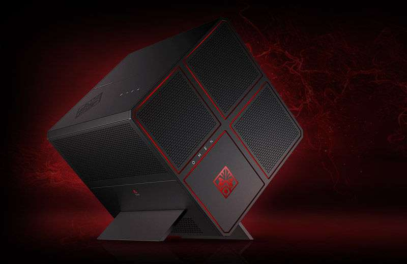

Sistema disponible para Servidor.
26 de Octubre de 2018
Recopilar Información sobre el sistema sobre el que está montado tu Servidor.

Hardware (Tu equipo de casa) :
- Micro: 8th Generation Intel i7 + 8700K processor.
- Placa: Motherboard HP Omen X 880-135ns
- Memoria (Cantidad y tipo): 16Gb DDR4, 32 GB Intel® Optane™ Memory for storage acceleration
- Discos: SSD 512Gb (x2) + HDD 4Tb + HDD 2Tb storage
- Dispositivos: USB 3.1 (x4), USB 3.0 Type-C (x2), USB 3.0 (x2), USB 2.0 (x4) , DVD-Writer, audio in/out (x1)
- Grafica: NVIDIA® GeForce® GTX 1070 (8 GB SLI GDDR5 dedicated)
- LAN/WLan: LAN 10/100/1000, WLAN 802. 11 ac RT 8822 ac 2x2 + BT 4.2LE
Software (Tu equipo de casa) :
- Sistema Operativo: Windows 10 Home 64 , Windows 10 Professional 64.
- Maquina Virtual con Versiones utilizadas y software necesario (Extension Pack, Guest Additions, etc.): UBUNTU 16.04.03 con GuestEdition 5.0.40.
- Software Integrado del SO mas relevante: Visual Studio - Java - Eclipse - BlueJ - Netbeans (editado netbeans.conf) - Geany ampliado y configurado - Pandoc y wkhtmltopdf - XAMPP
- Editores de texto: Libre Office - Microsoft Office 2016.
- Editores de imagen: GIMP.
- Antivirus: ClamAV.
- Software de mantenimiento: Ubuntu Cleaner.
- Software multimedia: VLC media player.
- Software de desarrollo: NetBeans - Eclipse Jee Oxygen - Visual Studio Code - Atom.
-
Servidor Web Integrado:
- XAMPP
-
Paquetes instalados en el sistema:
- Composer.
Paquetes en Ejecución configurados:
- Configuración y Versiones - 16.04.
- Usuarios / Passwords - Administrador / C****a - user / 8***6
- Carpetas y archivos relevantes
- - /usr/etc/lamp/ - /usr/share/ - /bin - /opt
- Seguridad en el Servidor. Reglas de cortafuegos, TCP Wrappers, xinetd, Firewall SO, Llaves SSH (autentificación)
- Otros Aspectos relevantes de la configuración. Copias de seguridad activas 24x7, encriptacion SSL/TLS, IPTables de Clientes-Servidor,Nginx - puerto 443,123.
Lenguaje/s instalados y a utilizar, versiones,...
- English (Windows/Linux), Español (Windows/Linux), Francés (Windows).